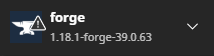

Comment jouer ?
Suivez les instructions, ça prend 2 min.
Télécharger les modsEnsuite extraire le ficher téléchargé
Puis mettez le dossier "mods" (ou replacez le si il existe déja) dans le dossier : AppData\Roaming\.minecraft
Enfin, ouvrez le dossier "mods" et ouvrez le fichier "forge-1.18.1-39.0.63-installer.jar"
Et voilà, vous avez plus qu'à lancer votre jeu !